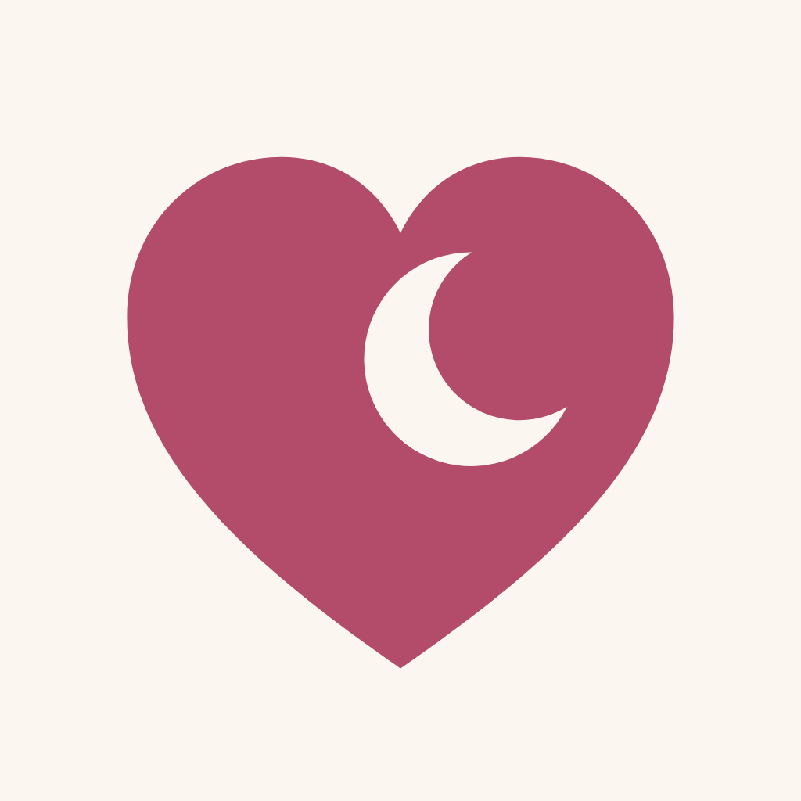
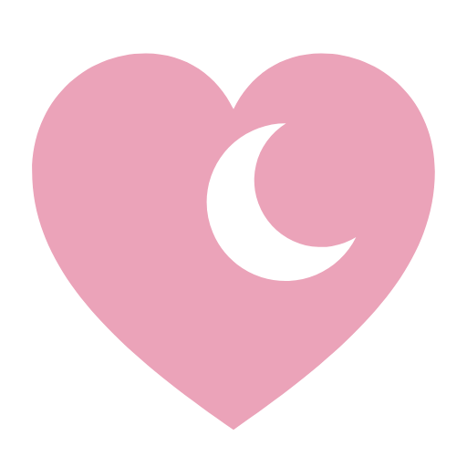

A breastfeeding tracker that feels like a dim, gentle night light. Deep plum, soft rose and peach, rounded type, and one calm ring that answers the main question at a glance: which side, and how long since the last feed.
Every screen works at 3am with one thumb. Big targets (56pt minimum), nothing important at the top, the two side buttons never move.
Nothing glows white, nothing is red, nothing moves unless something changed. Reminders are gentle; quiet hours arrive without sound.
Each side keeps its colour on every screen: buttons, ring, chips, charts. She can tell them apart without reading.
Short sentences, no exclamation marks, no dashes, no advice. "Baby" until she types a name.
Dividers are muted at 25% opacity. Tints behind chips and the ring track are the colour at 15% opacity. Every text pairing measures at least 4.5:1 contrast.
App icon: deep rose heart #B24C6A with a crescent moon, on milk cream #FBF6EF

Splash: the mark in rose #EBA3B9 on plum

One colour mark, for tinted icons
Apple's rounded system font (SF Pro Rounded) on iPhone; Nunito stands in on the web. Everything scales with the phone's text size setting. Numbers use tabular figures so timers don't jiggle.
Since the last feed started
Feeding on the left
Started at 4:22 PM
Neutral lilac, never a side colour, so it is never mistaken for Left or Right. 64 tall, full width.
4
8
12
16
24
32
Screen side margin 20. Minimum tap target 56.
Rows 18
Cards 28
Side buttons 36
Chips, full
150 to 250 ms, gentle springs, only to show what changed. Reduce Motion turns it into fades. A soft haptic tick on start, switch, pause and stop.
No exclamation marks, no hyphens or dashes, no medical advice.